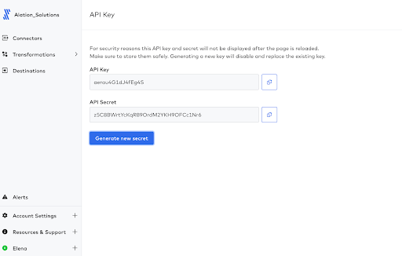
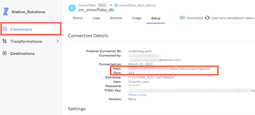
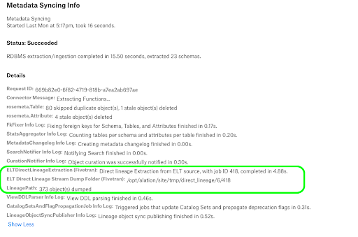
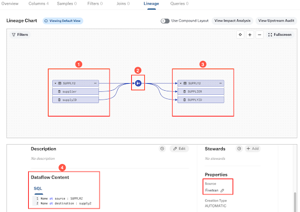
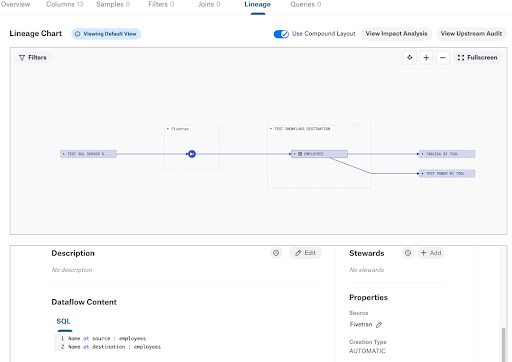

Add-On OCF Connector for Fivetran: Install and Configure¶
Prerequisites¶
Destinations and connectors have been set up under a Fivetran account.
The database that is added as a destination to Fivetran has been cataloged in Alation as an OCF data source. The Fivetran add-on will need to be configured on this data source (destination).
Fivetran database connectors (sources) have been cataloged in Alation as OCF data sources.
Authentication¶
The Fivetran connector requires the API key and secret from Fivetran to extract metadata. You can use an existing account with the Account Administrator privileges or create a separate account for Alation.
To give Alation access to Fivetran APIs:
Create a user account with the Account Administrator privileges or select an existing account.
Log in to Fivetran as this user and generate an API key and secret.
Save the key and secret in a safe location. They won’t be displayed after you close the page or navigate away. You will need to specify them in Alation to connect to Fivetran from the main (destination) data source.

{kind=link}
Group Name¶
The Fivetran connector configuration requires the destination name (or group name in the Fivetran API terminology) to build API calls.
You can find the destination name in the Name column on the Destinations page in the Fivetran user interface:
{kind=link}
Installation¶
Install the Fivetran OCF add-on connector on your Alation instance.
Customer-Managed Alation¶
Installation of OCF connectors requires Alation Connector Manager to be installed as a prerequisite.
To install an OCF connector:
If this has not been done on your instance, install the Alation Connector Manager.
Ensure that the OCF connector Zip file that you received from Alation is available on your local machine.
Install the connector on the Connectors Dashboard page using the steps in Manage Connectors.
Alation Cloud Service¶
On Alation Cloud Service instances, Alation Connector Manager is available by default.
Installation of add-on connectors on Alation Cloud Service instances depends on the installation type of your main (destination) OCF connectors: with or without Alation Agent. The main connector is the connector that was used to catalog the data source for which you will be configuring extraction from Fivetran.
To install the add-on connector:
Ensure that the OCF connector Zip file that you received from Alation is available on your local machine.
Install the connector on the Connectors Dashboard page using the steps in Manage Connectors or install it on the same Alation Agent as the main connector.
Configuration¶
Enable Fivetran Add-On Connector¶
To use the Fivetran add-on connector after installation:
Go to Admin Settings > Server Admin > Feature Configuration.
Locate and enable the feature flag Enable Fivetran Connector for OCF RDBMS sources (Paid Feature). By default, this flag is disabled.
Save changes in Feature Configuration.
Enabling this flag will add the Fivetran connector activation toggle to the Settings > General Settings page of data sources supported as destinations. See Supported Fivetran Destinations for the full list.
Note
The user interface to configure extraction from Fivetran will appear in the data source settings only after:
The connector is installed.
The corresponding feature flag is enabled.
Configure Fivetran Add-On for a Data Source¶
You configure the Fivetran add-on connector in the settings of the main data source that represents a destination in Fivetran.
To configure the connector:
Log in to Alation as Server Admin.
Open the Settings page of the main (destination) data source.
Click on the Fivetran tab and enable the toggle Configure Fivetran OCF Connector.
Specify the group name:
Field
Description
Group Name
Specify the destination name(s). On how to find group names in the Fivetran user interface, refer to Group Name. This field is case sensitive. This field allows you to specify multiple destination names separated with a comma. See more details in Using Multiple Group Names.
Specify the API key and secret for authentication:
Field
Description
API Key
Specify the API key.
API Secret
Specify the API secret.
Using Multiple Group Names¶
You can specify multiple group names. The group names listed in this field should have the same host and port information and point to the same database.
For example, if the main source is Snowflake, you can add and enlist them as:
test_snowflake_destination_1,test_snowflake_destination_2
If you accidentally add group names that point to different databases on different hosts, Alation will still extract metadata from Fivetran and create temporary (TMP) destination objects for these group names. This is an incorrect configuration that can be corrected by removing the irrelevant group names from the settings and rerunning metadata extraction.
Note
If the data source URI includes a parameter that specifies the database name, then extraction will happen from group(s) that match the database name.
Logging Configuration¶
Select the logging level for the connector logs and save the values in this section. The available log levels are based on the Log4j framework.
Parameter |
Description |
|---|---|
Log level |
Select the log level to generate logs. The available options are INFO, DEBUG, WARN, TRACE, ERROR, FATAL, ALL. |
Test the Connection¶
The connection test checks database connectivity. Alation uses the JDBC URI to connect to the database and to confirm when the connection is established. After specifying the JDBC URI and configuring authentication, test the connection. To validate the network connectivity, go to General Settings > Test Connection of the Settings page of your data source and click Test. A dialog box appears confirming the status of the connection test.
Metadata Extraction¶
Metadata extraction (MDE) from Fivetran is performed during metadata extraction from the main (destination) data source. It runs as a downstream extraction job if you have specified the required Fivetran authentication information.
Note
In case of selective MDE, the connector retrieves Fivetran metadata for all schemas but only streams metadata for schemas selected in MDE configuration, as the Fivetran API currently does not offer the ability to selectively retrieve schemas using schema IDs.
Lineage¶
Based on metadata from Fivetran, Alation auto-generates lineage between the current data source (destination in Fivetran) and other data sources cataloged in Alation that represent Fivetran connectors (upstream lineage). If the source data source is not present in the catalog, then Alation won’t generate upstream lineage for the main (destination) data source.
Note that lineage generated as part of metadata extraction (direct lineage extraction) is not the only source of lineage data you see on the Lineage diagram for a table. If the main data source supports query log ingestion, lineage data will also be generated from QLI (downstream lineage). Extraction from BI sources that use the current data source for data in reports and dashboards can add more downstream lineage. The Lineage diagram combines all lineages that Alation has calculated from all available lineage-generating pipelines.
Configure Lineage Across Data Sources¶
Lineage generation relies on the configuration where both the data source that is source in Fivetran and the data source that is destination in Fivetran are cataloged in Alation as OCF data sources. For Alation to match metadata objects between data sources, you will need to configure the Additional Datasource Connections field in the settings of the source data source before performing metadata extraction on the destination data source.
To configure cross-data source lineage:
In the Alation catalog, find the data source that represents the source (connector) in Fivetran.
Open the settings page of this data source and go to the General Settings tab.
Under Application Settings, in the Additional Datasource Connections field or the BI Connection Info field, depending on which you find, specify the source connection details from Fivetran (Finding Connection Information in Fivetran). In the example below, we’re using a Snowflake connection string:
Format: <Host>:<Port>
Example: mysnowflake.us-east-1.snowflakecomputing.com:443
If multiple destinations use the same source, you can specify multiple values separated by commas:
31.22.22.13:1551,mysnowflake.us-east-1.snowflakecomputing.com:443
Note
The same field Additional Datasource Connections may have been used to configure cross-source lineage between this data source and BI sources. If you find that values are already present in this field, append the new value separating it with a comma. Do not overwrite existing values.
Click Save to save your changes.
Finding Connection Information in Fivetran¶
To fill in the Additional Datasource Connections field on a source data source, use the values that you find on the Connection Details page for the corresponding connector in Fivetran.
{kind=link}
Downstream Lineage Job¶
You can monitor the status of extraction and lineage generation in the Extract Job Status table on the bottom of the Metadata Extraction tab of the data source settings.
Click the View Details link to view the log. The downstream jobs related to extraction from Fivetran will have the text ELT DirectLineageExtraction (Fivetran) or ELT Direct Lineage Stream Dump Folder (Fivetran) in the name.
{kind=link}
View Lineage¶
The Fivetran lineage information is generated automatically as part of metadata extraction. The metadata from Fivetran is used to build upstream lineage from Fivetran sources to the current data source (destination in Fivetran). For example, the screenshot below shows the Lineage diagram with metadata from Fivetran for a destination data source:
1—Upstream lineage showing tables in the source data source.
2—Dataflow object generated from Fivetran.
3—Tables in the current (destination) data source that were created by the Fivetran ELT pipeline.
4—Preview of the dataflow object as it is currently selected and highlighted on the diagram. The Dataflow Content field shows the table names at source and at destination. The Source of the dataflow object is Fivetran metadata.
{kind=link}
Note that if the source data source is not present in the catalog, then Alation won’t generate cross-data source upstream lineage for the main (destination) data source.
Dataflow Content¶
On catalog pages of dataflow objects generated from Fivetran, the Source field will display the value Fivetran.
The Dataflow Content field will not contain a SQL query. It will display the name of the table at source and destination respectively.
Find more information on Dataflow objects in Dataflow Objects.
Use Compound Layout View¶
Alation provides the ability to view lineage links between metadata objects based on their logical alignment with data sources on the Compound Layout View of the lineage data.
{kind=link}
This feature is not enabled by default. To make it available on your Alation instance, set the following alation_conf flags to True:
alation.feature_flags.DEV_enable_lineage_asset_grouping—Enables the Compound Layout View toggle on the Lineage tab.
alation.feature_flags.DEV_enable_lineage_asset_grouping—Enables the three-dot menu on lineage nodes on the Compound Layout View.
alation.feature_flags.DEV_enable_lineage_collection_nodes_modal—Adds the Show Parent/Show Children functionality.
On the lineage diagram for objects that have Fivetran lineage, users will see the Fivetran dataflows grouped together under the Fivetran source.
Note
Compound Layout View currently doesn’t support column-level lineage.
Temporary Lineage Objects¶
You may see objects marked as temporary (TMP) on your Lineage diagrams. Find more information about it in Badges. When you run MDE on the main (destination) data source, Alation will create temporary lineage objects in place of tables it cannot match in the catalog. Fivetran metadata-based lineage will include temporary objects when:
The source data source is cataloged in Alation, but you haven’t yet performed MDE from this source. The next MDE you perform on the source data source should remove them. The source data source is cataloged in Alation and MDE has been performed; however, the relevant source tables have not been extracted.
If you see temporary objects where you expect to see existing objects, check your data source configuration. You may also need to rerun MDE to bring the latest metadata updates into Alation.
Troubleshooting¶
Specific Error Messages¶
Problem |
Recommendations |
|---|---|
No cross-data source lineage is generated after performing MDE on the destination data source. |
Ensure that the Additional Datasource connections field has been correctly configured on the data source that represents the Fivetran source. See Configure Lineage Across Data Sources for details. Ensure that the Group Name value(s) is(are) correct in the settings of the destination data source. See Configure Fivetran Add-On for a Data Source for a Data Source for details. |
Extraction job status details log shows that there is no extraction done by Fivetran OCF connector. You see a message similar to the following: “Direct Lineage Stream Dump Folder (Fivetran): Dump folder has been removed as connector couldn’t extract any direct lineage data”. |
Ensure that the Group Name value(s) is(are) correct in the settings of the destination data source. See Configure Fivetran Add-On for a Data Source for a Data Source for details. |
Connector details view shows that there is no extraction even after configuring the correct Group Name. |
Group Name is case-sensitive. Make sure the Group Name value uses the correct case. Make sure the Fivetran sync was successful before running MDE in Alation. |
MDE fails at the stage where metadata should be extracted from Fivetran (the Fivetran extraction downstream job fails). You see a message similar to the following: “RPC that terminated with: status = StatusCode.INTERNAL details = “Unable to authorize with provided API Key and Secret. Please provide the correct API Key and Secret”. |
Ensure you have provided valid API credentials in the settings of the data source. |
MDE fails at the stage where metadata is extracted from Fivetran (the Fivetran extraction downstream job fails). You see a message similar to the following: “RPC that terminated with: status = StatusCode.INTERNAL details = “Provided Fivetran Group Name for destination is either empty or null”. |
The Group Name field is mandatory. Ensure you have provided a valid Group Name in the settings of the data source. |
MDE fails at the stage where metadata is extracted from Fivetran (the Fivetran extraction downstream job fails) even though the configuration is correct. You see a message similar to the following: “RPC that terminated with: status = StatusCode.INTERNAL details = “Malformed response. Please retry or verify if the response is proper”. |
Check the logs for the 500 error. This may be a Fivertran API issue. Contact Alation Support. |
API Rate Limiting¶
Fivetran has various rate limits for different types of API. However, no specific limit is defined for the metadata API. Non-trial accounts can make a maximum of 20,000 requests per hour. Trial accounts can make 500 requests per hour. For more information, refer to Rate Limiting in Fivetran documentation.
In a rare scenario, the Fivetran OCF connector may exceed the allowed rate limit. If this happens, the connector will receive the response “HTTP 429 Too Many Requests” from Fivetran. It will go into sleep mode until it can retry the request based on the Retry-After value in the Fivetran API response.
Sleep mode is not logged to the job status details on the Metadata Extraction tab of the settings; however, Alation will log it to the Fivetran connector log (Admin Settings > Server Admin > Manage Connectors > Fivetran Add-On OCF Connector).
In the connector logs, look for an entry for alation.fivetran.util.HttpRestUtility with the message that the connector entered the sleep mode: Add-on Connector to sleep for <...>.
Log Location¶
From the Alation user interface, you can review OCF connector logs in Admin Settings > Server Admin > Manage Connectors > <your_OCF_connector>. For data sources using the Fivetran add-on connector, MDE from the main data source is logged to the main connector log and extraction from Fivetran is logged to the Fivetran connector log.
Admins of on-prem Alation instances can find more information in Troubleshooting.